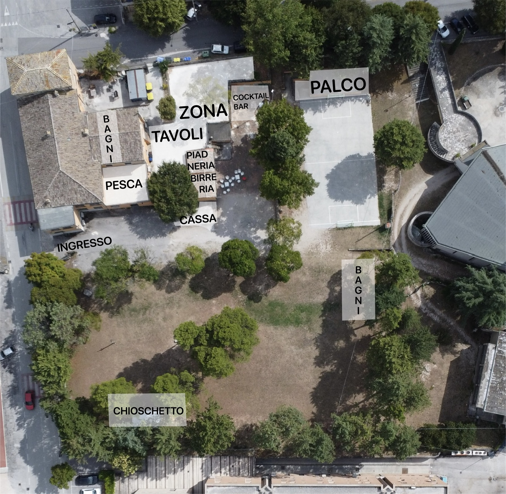

Via Sant'Egidio 35, Borgo Trevi
Il parco dell'ex asilo
Spazi che erano totalmente abbandonati — parco, pista, locali — e che il Circoletto FASF ha riportato a vivere, tutto l'anno.

Planimetria dell'area durante Sant'Egidio in Festa — tocca un punto per saperne di più
Area per area
Cosa trovi nel parco
- 01 Ingresso su Via Sant'Egidio
- 02 Area tavoli con cassa
- 03 Piadineria & birreria
- 04 Pesca di beneficenza
- 05 Cocktail bar
- 06 Palco, sul campetto
- 07 Bagni — vicino ingresso e vicino palco
- 08 Chiosco, più avanti nel parco
- 09 La pista
- 10 Grande prato alberato
Non solo festa
Vissuto tutto l'anno
L'obiettivo del Circoletto FASF non è solo organizzare dieci serate d'estate: è aver riaperto uno spazio che il paese aveva perso, e farlo vivere durante tutto l'anno. Il parco è aperto anche fuori dai giorni di Sant'Egidio in Festa — per una partita a pallone, una serata tra ragazzi, un momento in tranquillità.
Vedi il calendario degli appuntamenti →"La soddisfazione più grande è stata vedere il parco pieno di ragazzi: bambini che giocano, ragazzi che passano le serate qui anche solo per vedere una partita, per parlare un po'." — Il Presidente del Circoletto FASF